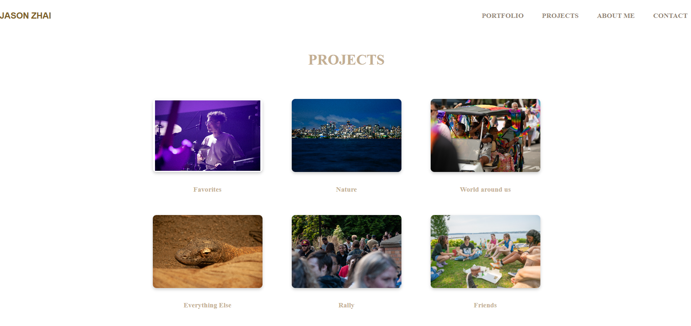

A clean portfolio site with custom logos and gallery for a couple's photo blog
2 weeks
Individual project
HTML, CSS, JavaScript, Figma, Adobe Photoshop

This project involved designing and developing a beautiful photography portfolio website for a couple who wanted to showcase their photography work and share their journey through a blog. The goal was to create an elegant, user-friendly platform that highlights their artistic vision and storytelling abilities.
The design focused on creating a minimalist, gallery-style layout that puts the photography front and center. The clean aesthetic allows the images to speak for themselves while providing an intuitive navigation experience for visitors exploring their work.
The website was built with performance in mind, using modern web technologies to ensure fast loading times even with high-resolution photography. Special attention was paid to image optimization and responsive design to provide an excellent experience across all devices.
The user experience was designed to be intuitive and engaging, allowing visitors to easily browse through the photography portfolio, read blog posts, and get in touch for collaborations or bookings. The layout encourages exploration and discovery of their work.
The website successfully created a professional online presence for the couple, helping them showcase their photography work to a wider audience and attract new clients for their photography services.